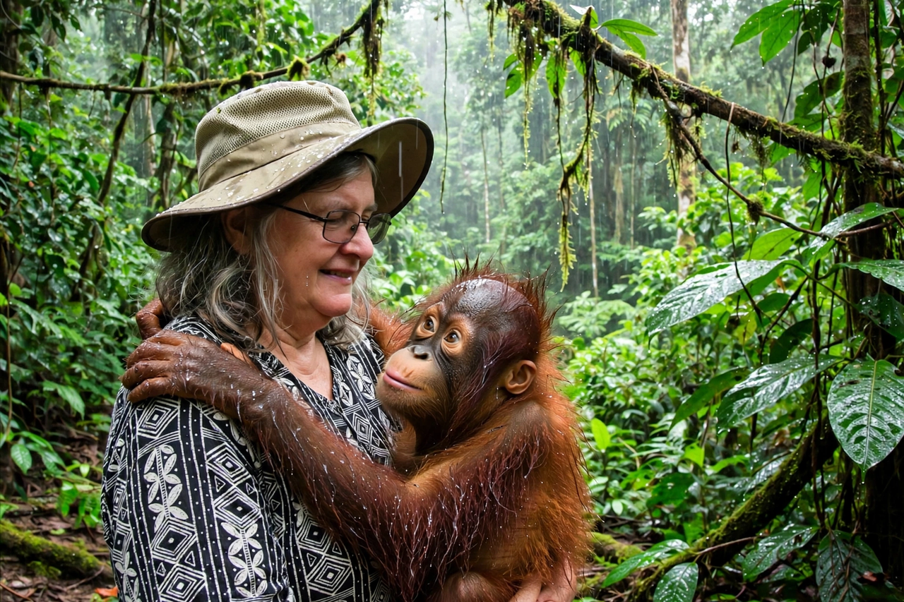

| Biruté Galdikas | |
|---|---|
 Galdikas with an orangutan at Camp Leakey, Borneo | |
| Born | Biruté Marija Filomena Galdikas, 10 May 1946, Wiesbaden, Germany |
| Known for | Study and conservation of orangutans |
| Education | University of California, Los Angeles (BA, MA, PhD) |
| Fields | Primatology, anthropology, conservation |
| Institutions | Orangutan Foundation International; Simon Fraser University |
Biruté Marija Filomena Galdikas (born 10 May 1946) is a Lithuanian-Canadian anthropologist, primatologist, conservationist and author. She is the world's leading authority on orangutans and has conducted the longest continuous study of any wild mammal population, following orangutans in Indonesian Borneo since 1971.
Together with Jane Goodall (chimpanzees) and Dian Fossey (gorillas), Galdikas forms the trio known as the "Trimates", recruited by palaeoanthropologist Louis Leakey to study the great apes in their natural habitats.
Galdikas was born in Wiesbaden, Germany, to Lithuanian parents fleeing the Soviet occupation of their homeland; the family emigrated to Canada in 1948 and she grew up in Toronto. She studied at the University of British Columbia and then at UCLA, earning degrees in psychology and zoology and, in 1978, a PhD in anthropology. While a graduate student she met Leakey, who helped arrange her orangutan study despite the formidable logistics of working in remote Borneo.
In 1971 Galdikas and her then-husband Rod Brindamour established a research site in Tanjung Puting Reserve (now National Park) in Central Kalimantan, Indonesian Borneo. She named it Camp Leakey in honour of her mentor. Orangutans proved vastly harder to study than the other great apes — solitary, arboreal and ranging through swamp forest — and her early years produced the first detailed data on their feeding ecology, ranging and social organisation.
Her key findings include the exceptionally long orangutan interbirth interval of about eight years — the longest of any mammal — which makes orangutan populations extremely vulnerable to any increase in adult mortality. In parallel, Camp Leakey became a centre for rehabilitating and releasing orphaned and ex-captive orangutans, work that drew some methodological criticism from other primatologists but reintroduced many individuals to the wild.
In 1986 Galdikas co-founded Orangutan Foundation International (OFI), based in Los Angeles, which supports habitat protection, orangutan care and release, and education in Indonesia. She has campaigned against the destruction of Bornean rainforest for palm oil plantations and logging, the chief threats to orangutan survival, and has worked with Indonesian authorities to secure and reforest habitat, including purchasing land adjoining Tanjung Puting.
She is a full professor at Simon Fraser University in British Columbia and professor extraordinary at the University of Indonesia. Her books include Reflections of Eden: My Years with the Orangutans of Borneo (1995) and Orangutan Odyssey (1999).
Galdikas has received numerous honours, including the Explorers Club's Eddie Bauer Earth Award, the Sierra Club's Chico Mendes Award and the Tyler Prize for Environmental Achievement (shared, 1997). She was one of the first scientists profiled on the cover of National Geographic for her orangutan work, in 1975 — a distinction shared with Goodall and Fossey.